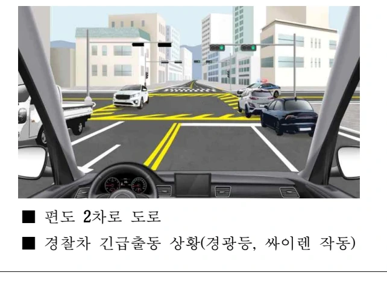

852. Hai cách điều khiển xe đúng nhất trong tình huống sau là gì?

- ①Vì đèn giao thông của xe bật xanh nên cứ thế tiến vào đường giao nhau.
- ②Vì xe cứu hộ cần được ưu tiên đi trước, nên phải dừng lại trước khi vào ngã tư.
- ③Vì xe đang ở làn đường số 2 có thể đột ngột đổi làn đường sang bên trái nên phải giảm tốc độ vừa đủ trước.
- ④Tín hiệu đèn giao thông của xe được ưu tiên hơn xe khẩn cấp nên cứ thế tiến vào.
- ⑤Tăng tốc để có thể vượt qua trước xe khẩn cấp rồi tiến vào.
Xem đáp án
Đáp án
② Vì xe cứu hộ cần được ưu tiên đi trước, nên phải dừng lại trước khi vào ngã tư.
③ Vì xe đang ở làn đường số 2 có thể đột ngột đổi làn đường sang bên trái nên phải giảm tốc độ vừa đủ trước.
Căn cứ
Khi xe ưu tiên đến gần ngã tư hoặc gần ngã tư, người điều khiển ô tô, ngựa, xe điện phải tránh nơi giao nhau và dừng lại tạm thời. Thường xuyên xảy ra trường hợp nhường đường ưu tiên cho xe ưu tiên làm nhiệm vụ khẩn cấp và chuyển tuyến khi xe bị ùn lại. Nói cách khác, không thể loại trừ khả năng xe ở làn thứ hai chuyển hướng sang bên trái, như trường hợp ③. Vì vậy, hãy giảm tốc độ trước vừa đủ để tránh tai nạn (Luật Giao thông đường bộ, Điều 29, Khoản 4).
Phần căn cứ là bản dịch máy để tham khảo.